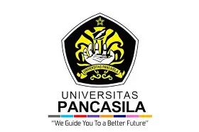
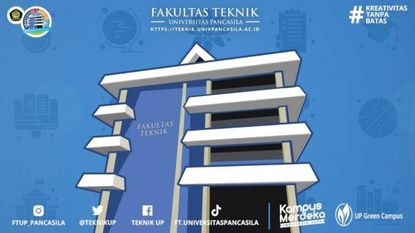

Tentang Kampus



Universitas Pancasila


Universitas Pancasila
Daftar Program Studi:
Daftar Fakultas di Universitas Pancasila:
Fasilitas :
Email: Humas Universitas Pancasila
Website Universitas: Universitas Pancasila
Website Teknik: Fakultas Teknik Universitas Pancasila
Youtube: Universitas Pancasila
instagram: Universitas Pancasila